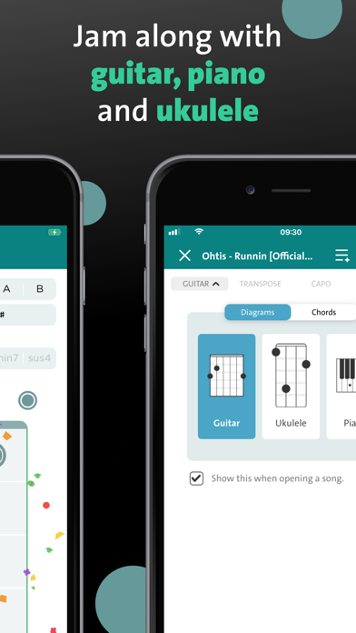
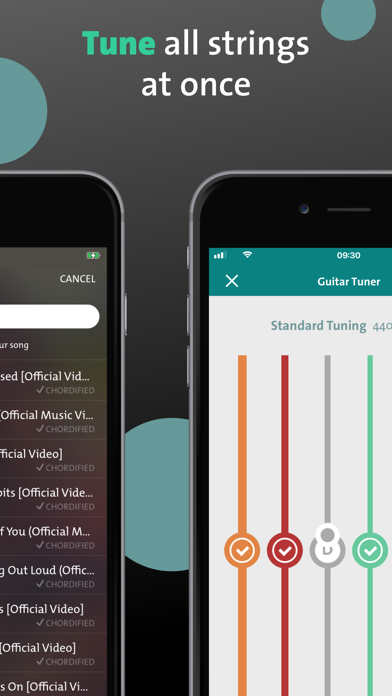

用了三年才发现 Chordify 藏着这么多冷门玩法
以为它只是个给吉他手看和弦的工具？翻遍设置和隐藏入口，挖出五个官方都不怎么宣传的功能——从曼陀林视图到离线缓存，总有一个让你惊呼"原来还能这样"。
我猜你打开 Chordify 的场景和我一模一样：掏出手机、搜一首歌、跟着弹出的和弦图扫弦——流程熟练到闭着眼能走完。但你有没有停下来问过：除了"识别和弦然后显示"这件事，它还藏着些什么？
最近闲下来把手机版和 iPad 版的菜单翻了个底朝天，发现这个看似朴素的和弦工具，藏得真的比我想象的深多了。
曼陀林？它居然支持
这是我最意外的发现。Chordify 的官网上写着支持四种乐器：吉他、钢琴、尤克里里、曼陀林。前三个都在明面上，曼陀林却像个没人注意的备胎——藏在乐器切换菜单最底下，图标小得几乎看不见。

曼陀林是 G-D-A-E 双弦成组的乐器，八弦四根弦组。切过去之后，整个和弦视图的显示逻辑完全变了：圆点变成按组标记，×号哑弦也对应一组弦而不是单根。弹的时候手指要压两根弦一起拨，力度比弹单弦乐器大一点——对习惯了民谣吉他的人来说，第一次上手挺新奇。
但要说清楚：它的指法库是"够用就行"的水平。常规三和弦和常见七和弦没问题，复杂爵士和弦的指法覆盖度就不如吉他了。曼陀林用户群体小，功能迭代上它一直是边缘位。可如果你碰巧玩蓝草或乡村乐，这个冷门入口值得去点一下。
手机直接当调音器——而且藏得很深
你手机里装了专门的调音器 App 吗？我以前也装着好几个，直到发现 Chordify 自己就带一个——没装的去下载拿就行，而且用手机麦克风就能调。
入口在哪呢：打开任意一首歌的播放器界面，找右下角那个不起眼的小图标——点进去就是内置调音器。

原理很简单，用手机麦克风实时收音、显示音准偏差。精度够用，日常调弦完全没问题。好处是不用额外装 App，打开 Chordify 就能顺手调两下再跟弹。
但有个坑要提醒：部分国产 ROM 对后台麦克风权限管得严，调音器如果不响，别以为是 Chordify 坏了——去系统设置里把麦克风权限和"后台弹出界面"都手动打开就好。我当初在某个国产手机上折腾了半小时才找到问题。
iPad 大屏上的"概览视图"——像桌面端一样爽
如果你只有手机用 Chordify，可能从没注意过这个功能。但在 iPad 上，打开播放器后切到"概览"模式（不是逐小节滚动的那个视图），你会看到整面铺开的和弦网格——观感和桌面端几乎一致。
区别是手机屏幕小，只能盯着当前小节；iPad 大屏一下能看到好几行和弦，扫弦扫到哪、下一个和弦在哪，眼睛扫一下就知道，不用频繁往下翻。
这个功能官方没做过重点宣传，但 iPad 用户里口碑传得很快。如果你刚好有 iPad，下次弹吉他时别只拿它看视频，试试用 Chordify 开概览视图跟弹，体验完全不一样。
离线缓存——通勤族的福音（但要订阅）
Chordify 有个订阅专属功能：离线模式。在有网的时候把想练的歌缓存下来，地铁上、没信号的地方也能照常跟弹，不费流量。
设置路径：进账户设置 → 离线模式 → 勾选要缓存的歌曲。缓存的是和弦数据和声轨片段，不是整首歌，所以一首歌只有几 MB。
但有个门槛：这是订阅功能，免费用户用不了。而且苹果内购和 Google Play 内购的订阅不互通——iOS 上付的钱，换安卓设备用不了，反过来也一样。我见过有人花了 20 块订阅，结果换了安卓手机发现又得重新付一遍，气得在商店评论里骂。这个坑官方没在明显位置标出来，只在帮助文档里有一行小字。
还有些零碎的小发现
- 注册不是必须的：搜索歌曲、解析和弦、试听跟弹这些基础功能，网页版和 App 不登录也能用。只有保存曲库、跨设备同步才需要账号。不想注册的话直接搜就行，省一步麻烦。
- 订阅跟着商店账号走：App Store 或 Google Play 内购的订阅，和登录用的 Chordify 账号是两回事。订阅跟着商店账号，曲库跟着登录账号。换设备别搞混了。
- 安卓版的省电白名单：部分国产系统的省电策略会把后台音频杀掉——跟弹到一半突然没声，不是 Chordify 崩了，是系统把它的后台进程掐了。解决办法：进系统设置把 Chordify 加到"不限制后台"或"允许后台活动"白名单。
写在最后
Chordify 不是那种功能多得让人头昏的重型工具，它的核心逻辑一直很纯粹：识别和弦、展示、跟弹。但在这个核心之上，它悄悄堆了不少有用的小东西——曼陀林视图给小众玩家惊喜、内置调音器省一个 App、离线缓存照顾通勤族、iPad 概览视图给大屏用户更好的体验。
这些东西藏得深，官方也不怎么宣传，只有真的翻菜单、摸遍每个角落的人才能发现。把它用透，比频繁换一堆同类工具靠谱多了。